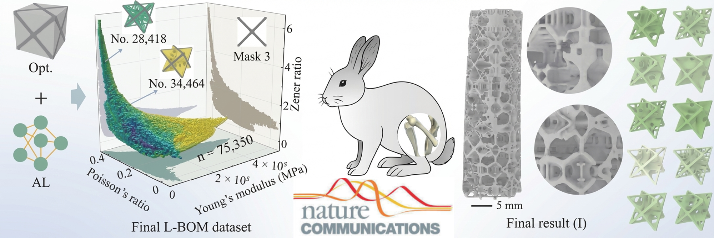
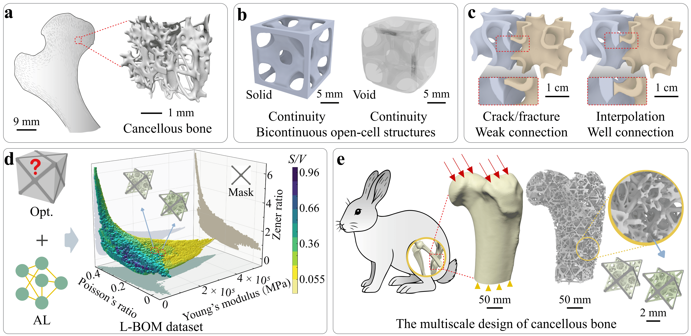

Data-driven inverse design of multifunctional bicontinuous multiscale structures
Nature Communications 2026

Abstract
Bicontinuous multiscale structures combine mechanical support with continuous pathways for transport, but inverse design is difficult when neighboring microstructures must remain connected. This work introduces L-BOM (Large-range, Boundary-identical, Bicontinuous Open-cell Microstructure): four datasets of three-dimensional microstructures that share prescribed boundary masks while spanning a broad range of properties.
Starting from optimized structures, a boundary-conditioned generative model and active learning expand the datasets while retaining connected solid and void phases. These compatible building blocks can be assembled directly in multiscale designs. The paper demonstrates applications in bone implants, chair components, and multifunctional structures with tunable elasticity and permeability.
Pipeline
The approach begins with bicontinuous open-cell microstructures, builds boundary-compatible datasets through optimization and active learning, and selects building blocks for a target multiscale design.

Dataset construction
Four boundary masks define separate microstructure families. A boundary-conditioned diffusion model proposes new structures; finite-element analysis and connectivity checks determine which candidates extend the initial optimization sets. The final datasets contain 404,355 microstructures, each discretized into 1283 elements.

Femoral implant design
The paper uses the dataset to match elastic response and pore architecture in a porous femoral implant. Selected cells are assembled into a connected structure and compared with representative IWP, BCC truss, and spinodal architectures.

BibTeX
@article{wang2026lbom,
title = {Data-driven inverse design of multifunctional bicontinuous multiscale structures},
author = {Wang, Lili and Feng, Jingxuan and Zhai, Xiaoya and Han, Jiacheng and Chen, Kai and Ma, Winston Wai Shing and Liu, Ligang and Fu, Xiao-Ming},
journal = {Nature Communications},
volume = {17},
pages = {1335},
year = {2026},
doi = {10.1038/s41467-025-68089-2}
}